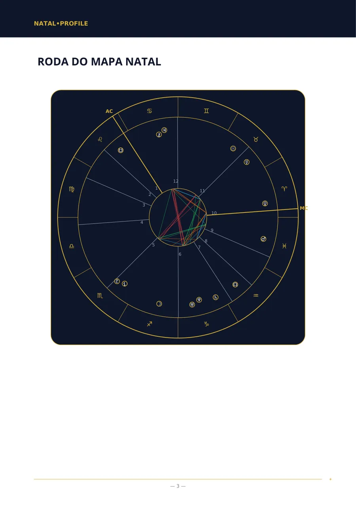
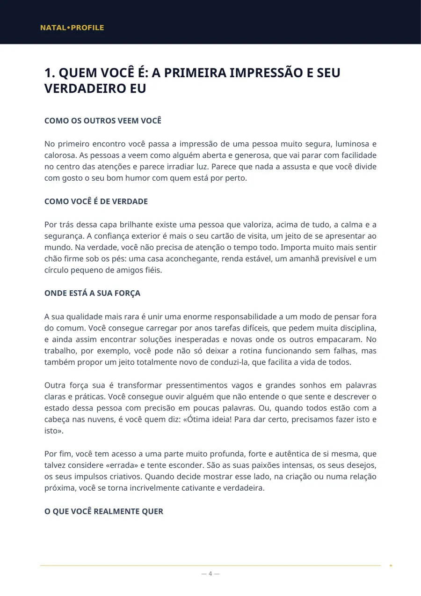
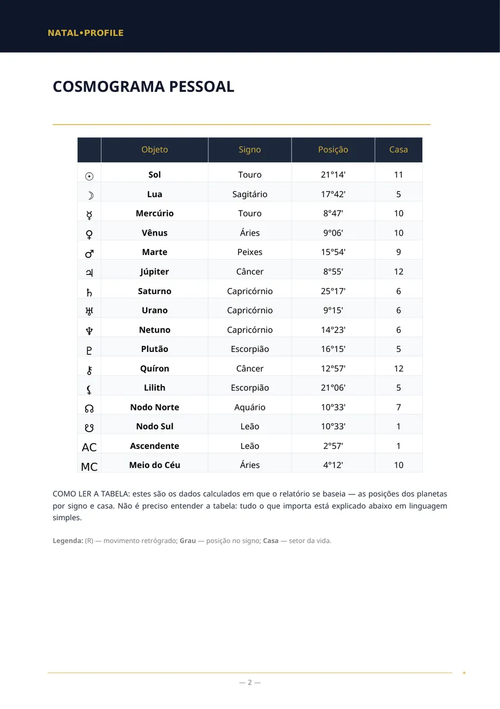
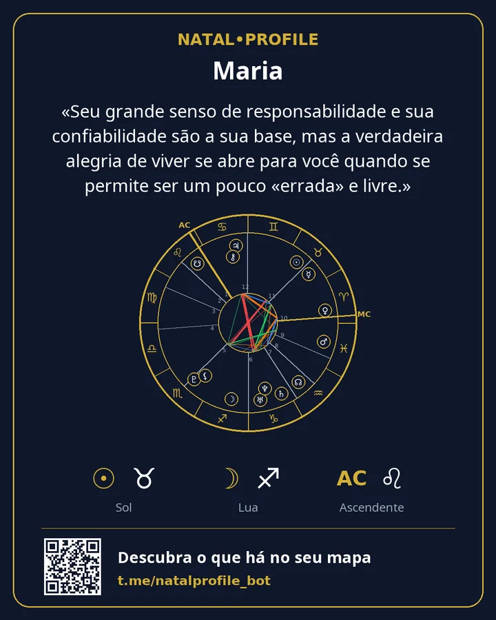

Seu mapa natal, explicado em linguagem simples
Informe data, hora e cidade de nascimento e em poucos minutos você recebe um PDF: como é o seu caráter, onde está a sua força, o que atrapalha e por onde começar. Sem jargão e sem frases genéricas sobre o signo.
- Cálculo com as Efemérides Suíças
- 15 idiomas
- Sem assinatura
Dois cálculos rápidos
São feitos no seu navegador. Nada é enviado nem guardado.
Signo solar e elemento
Analisar o mapa inteiro →O signo solar é um entre dezenas de pontos de um mapa. Um relatório considera todos os planetas, as casas e as ligações entre eles.
Número do caminho de vida
Receber a análise numerológica →Calculado da mesma forma que no relatório do bot: os dígitos da data são somados até restar um só. Os números do nome são calculados no bot.
Como é um relatório
Páginas reais do relatório «Mapa natal». É um exemplo: os dados de nascimento são fictícios.




«Seu grande senso de responsabilidade e sua confiabilidade são a sua base, mas a verdadeira alegria de viver se abre para você quando se permite ser um pouco «errada» e livre.»
O que você pode pedir
As listas de capítulos nas páginas dos relatórios são as que você recebe no PDF. Os preços estão em Telegram Stars.
Mapa Natal (Análise Completa)
Uma análise completa do seu caráter a partir da data, da hora e do local de nascimento.
Mapa Natal (Análise Básica)
Uma análise do seu caráter quando a hora de nascimento é desconhecida.
Análise de Compatibilidade (Completa)
Duas pessoas: o que atraiu vocês, onde discordam e o que dão um ao outro.
Análise de Compatibilidade (Básica)
Compatibilidade de caráter quando a hora de nascimento é desconhecida.
Análise de Carreira e Finanças
No que você é forte no trabalho, quais ocupações combinam com você e como lida com dinheiro.
Mapa Infantil — um guia para entender seu filho
O que seu filho precisa para se sentir tranquilo e em que apoiá-lo.
Previsão Anual (Revolução Solar)
Os temas do seu ano, de aniversário a aniversário, com períodos datados.
Horóscopo Diário
Uma previsão para hoje com base no horário exato dos aspectos da Lua.
Numerologia pelo Nome e Data de Nascimento
Os números do seu nome e da sua data de nascimento no sistema pitagórico.
Mapa Védico (Jyotish)
Um mapa védico: lagna, grahas, nakshatra e períodos dasha.
Como funciona
Da primeira mensagem ao arquivo pronto em poucos minutos.
Abra o bot
No Telegram, sem cadastro e sem senhas.
Informe seus dados
Nome, data, hora e cidade de nascimento. A cidade é escolhida em uma lista.
Receba o PDF
Geralmente em até 5 minutos. O arquivo chega no chat.
Guarde o cartão
Uma imagem com o seu mapa e a frase principal do relatório.
Pagamento
Os relatórios são pagos com Telegram Stars no próprio chat com o bot. Não há assinatura — você paga uma vez por relatório.
O primeiro capítulo da análise natal com o seu mapa e um horóscopo do dia — uma vez cada, sem pagar.
Você paga um relatório e recebe um link. Seu amigo abre, informa os dados dele e recebe a análise.
O bot tem a ajuda «Não consegue pagar?» e o suporte responde no Telegram.
Seus dados
A data, a hora e o local de nascimento servem apenas para calcular o mapa e escrever o relatório.
Quando o PDF é enviado, o nome, a data, a hora e o local de nascimento são apagados.
O PDF permanece 24 horas no servidor e depois é apagado. Você fica com ele no chat.
As calculadoras funcionam no seu navegador. O site não tem formulários, cadastro nem rastreadores.
Perguntas frequentes
Não sei minha hora de nascimento. O que faço?
Escolha um relatório «sem hora de nascimento». Ele não inclui as casas nem o ascendente, mas o caráter, os sentimentos, o modo de pensar e os relacionamentos são descritos sem eles.
Qual a diferença para um horóscopo por signo?
Um horóscopo por signo usa só a posição do Sol. Um relatório calcula todos os planetas, as casas e as ligações entre eles para a sua data, hora e local de nascimento.
Quem escreve o texto do relatório?
As posições dos planetas são calculadas por um programa com as Efemérides Suíças. Depois, um modelo de linguagem escreve o texto a partir desses cálculos seguindo regras fixas.
Em quais idiomas há relatórios?
Em quinze: inglês, russo, espanhol, hindi, português, vietnamita, turco, indonésio, uzbeque, cazaque, francês, alemão, italiano, árabe e persa.
Posso pedir reembolso?
O relatório é criado pessoalmente para você, por isso o pagamento não é devolvido depois que o PDF é entregue. Se um relatório não foi gerado por nossa culpa, o valor é devolvido integralmente.
Comece pelo capítulo grátis
Calculamos o seu mapa e enviamos o primeiro capítulo da análise de verdade. Se gostar, você pede a completa.